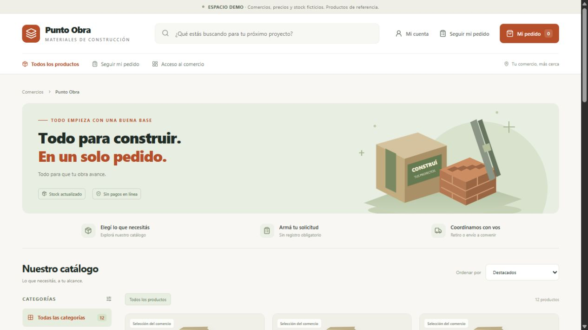

Demo interactivaCorralón Punto Obra
Materiales de construcción con búsqueda, categorías y pedidos por cantidad. Armá una solicitud y explorá el seguimiento del pedido para coordinar retiro o entrega.
Demo de Scalaris Comercio con negocio, precios y stock ficticios. Sin pagos en línea.
Explorar la demo de Corralón Punto Obra, abre en una pestaña nueva